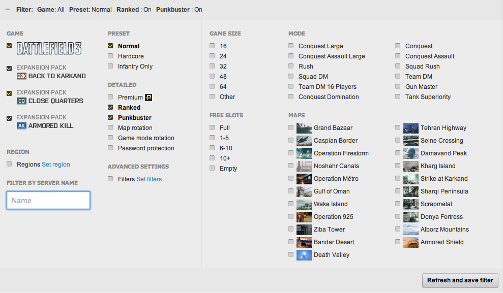

Questions from other groups
1. What does quality in your application represent? How did you interpret the qualities from the data provided to you?
A: Quality is the value in the IMDb rating. More specifically, in the database it is the object with id "101" in info_type table. That values went from 0 to 10, and we decide to cluster them in 3 groups so that it was more user friendly to show them in this way. While converting them we decided to create three clusters containing the same number of films, so that it is easier to see how trends are changing. Values have been divided in this way:
- Values from 0 to 5 have been converted in "LOW QUALITY"
- Values from 5 to 8 have been converted in "MEDIUM QUALITY"
- Values from 8 to 10 have been converted in "HIGH QUALITY"
Other choice was possible. Actually I think this one takes into account both requirements and user needs, that's why we went for it. (CC)
2. What was the idea of providing so many option to the user at one place? (Control Panel) Don't you think the user would be overwhelmed with options?
A: No, I don't think we provided too many options to users. User should be provided as many options as possible, as long as everything is under control.
Take a look at this snapshot of Battlefield® 3 battlelog from Electronic Arts®.

I think as long as a panel has a good layout, decent use of space, large enough fonts, not-too-short distance between options and filters, users can handle it. That's why I didn't make complex multi level menus. (SY)
3. In the timeline filters, monsters were available while in museum there was relation between monsters and their types. How did you manage this classification?
In the timeline tab the user is able to apply many kinds of filters (monster, genre, budget, quality, popularity etc.) to the data while in the "museum" tab the user can visually understand the relationships between monsters and visualize data about one monster (clicking on a child node) or a "category" of monsters clicking on a father node. In this tab the user is also able to compare two monsters or category of monsters. They are focusing on different aspects (movies about monster and monster in movies). (GC)
4. Why did you use two timelines?
A: The first reason is that we wanted to give the user the possibility to compare two different filters, e.g vampire musicals movies vs. piranha horror movies. By allowing user to change y axis independently, we provide possibility to either do research on 'how relative two plots are' or do research by two users separately at the same time; Besides, in each timeline we are able to filter data and also cluster data using colors, plotting two multi-colored curves on the same plot would result in a not clear timeline and it will become a color-scheme disaster. (GC & SY)
5. The monster taxonomy was a nice idea of clustering/grouping monsters. What was the purpose of draggable monster circles? Was there a plan to implement dynamically relating monsters from different parents types?
A: Thank you, being able to drag nodes allows the user to change the displacement of the nodes in order to better understand not just the clustering of monsters but also the relationships between clusters. Moreover we have decided to take advantage of the dimension of the Wall to create a taxonomy which one or more users can play with at the same time. Each Monster is related to just one parent, it would be less clear having multiple parents and it would also create a problem in managing clusters queries to the database. (GC)
6. Don't you think that the amount of graphics could be a bit overwhelming and distracting from data?
No, we don't think so. As we mentioned in answer to Q4, we used two timelines to separate information to avoid overwhelming. And we used tabs to separate different parts of the application into different pages. And we think that the two reversed plots with scalable y axis allow the user to really compare the two things. (SY & GC)
7. So moving the nodes, how does that show relationships? Also, what is the functionality of dragging?
A: Being able to drag nodes allows the user to change the displacement of the nodes in order to better understand not just the clustering of monsters but also the relationships between clusters. Moreover we have decided to take advantage of the dimension of the Wall to create a taxonomy which one or more users can play with at the same time. (GC)
9. Why was the bottom graph upside down? How does it help one more clearly visualizing or compare?
A: we think that the two reversed plots with scalable y axis help user compare between two filters better than un-reversed plots. Users can tell how far the two plots go from middle of the screen to top / bottom of the screen respectively very easily. But if the bottom graph is not upside down, then by no means user can do comparison.
When you need to compare values of the graph in the same year, on two standard graphs you would perform these operations with your eyes:
- Search for the year in the first graph
- Look from the year label to the top of the value to realize how big that quantity (first graph)
- Search for the year in the second graph
- Look from the year label to the top of the value to realize how big that quantity (second graph)
- Repeat until you realize the relation between these two elements
With our upside down graph, on the other hand, this process is reduced to:
- Search for the year
- Look from the year label to the top of the value to realize how big that quantity (first graph)
- Go down with your eyes to see the relation with the other graph
- Repeat until you realize the relation between these two elements
It actually makes easier and faster a comparison between the two graphs. Of course the single reversed graph taken alone would be quiet wired, but combined with the other one, we think it is helpful. (CC & SY)
10. What is the difference between the top and bottom tables and graphs of the first screen?
A: Separately, they have same functionality, only difference is the bottom graph is upside down, to make the comparison between the two graphs easier. As a whole, they provide capability of comparing two different filters at the same time. For example, users can select to see all vampire movies (clustered by one of the six filters of budget/country/quality/popularity/certificate/format) in graph 1 while see all monster movies in graph 2 to find out the relationship between numbers of vampire movies and numbers of monster movies. (SY & CC)